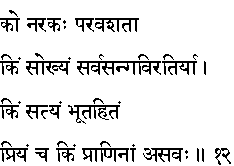
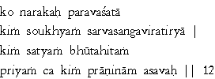

|

|
Verse 12 - Meaning:
Q: What is (comparable to) Hell? (ko narakah)
A: The state of subjection to others. (para-vasata)
Q: What is happiness? (kim saukhyam)
A: The state of complete non-attachment to everything.
Q: What is truth? (kim satyam)
A: That one which is beneficial to all living beings (and not harmful to even a single creature).(bhuta hitam)
Q: What is dear to all creatures ?
A: Life. (asavah - the opposite of savah or death)
|